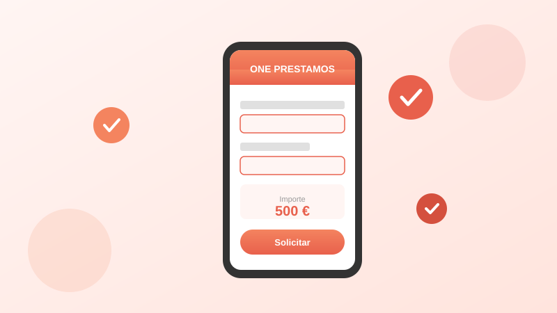

Cómo solicitar un préstamo online en España: guía paso a paso

Solicitar un préstamo online es hoy un proceso rápido y sencillo, pero si es tu primera vez, es normal que tengas dudas. ¿Qué documentos necesito? ¿Es seguro dar mis datos por internet? ¿Cuánto tarda en llegar el dinero?
En esta guía te acompañamos paso a paso por todo el proceso, desde la preparación inicial hasta el momento en que recibes el dinero en tu cuenta.
Antes de empezar: ¿estoy preparado?
Antes de solicitar cualquier préstamo, hazte estas preguntas:
- ¿Realmente lo necesito? Un préstamo rápido es ideal para emergencias puntuales, no para gastos que puedes planificar.
- ¿Puedo devolverlo a tiempo? Calcula si podrás pagar la cuota cuando llegue el vencimiento, teniendo en cuenta tus ingresos y gastos fijos.
- ¿He comparado opciones? Revisa al menos 2-3 prestamistas para encontrar la mejor oferta en términos de coste total y condiciones.
Paso 1: Prepara la documentación
La mayoría de los prestamistas online en España te pedirán la siguiente información:
- DNI o NIE en vigor: necesitarás tenerlo a mano para fotografiarlo o introducir los datos manualmente.
- Número de cuenta bancaria (IBAN): debe ser una cuenta española a tu nombre. Es donde recibirás el dinero y desde donde se realizará el cobro.
- Teléfono móvil: para recibir códigos de verificación por SMS.
- Email: donde recibirás el contrato y las comunicaciones.
A diferencia de los bancos tradicionales, la mayoría de los prestamistas online no exigen nómina, declaración de la renta ni avalistas.
Paso 2: Elige el importe y el plazo
Las plataformas de préstamos rápidos suelen tener un simulador donde puedes elegir:
- La cantidad: por ejemplo, en One Prestamos puedes solicitar entre 200 y 1.600 euros.
- El plazo de devolución: desde unos días hasta varios meses, dependiendo del prestamista.
El simulador te mostrará automáticamente el coste total del préstamo, incluyendo intereses y comisiones. Presta especial atención al TAE (Tasa Anual Equivalente), que es el indicador más fiable para comparar diferentes ofertas.
Paso 3: Rellena la solicitud
El formulario online suele pedir:
- Datos personales: nombre completo, fecha de nacimiento, dirección.
- Datos de contacto: teléfono y email.
- Datos financieros: tipo de empleo, ingresos aproximados.
- Datos bancarios: tu IBAN para la transferencia.
El proceso suele tardar entre 5 y 10 minutos. Asegúrate de que todos los datos son correctos, ya que cualquier error puede retrasar la aprobación.
Paso 4: Verificación de identidad
Para cumplir con la legislación española contra el blanqueo de capitales, los prestamistas deben verificar tu identidad. Los métodos más habituales son:
- Foto del DNI/NIE: te pedirán fotografiar ambas caras del documento con tu móvil.
- Selfie o videollamada: para confirmar que eres la persona del documento.
- Microtransferencia: algunos prestamistas envían un céntimo a tu cuenta para verificar que eres el titular.
Paso 5: Evaluación y aprobación
Una vez enviada tu solicitud, el prestamista realiza una evaluación de solvencia automatizada. Este análisis verifica:
- Tu historial crediticio (consulta a bases de datos como ASNEF o CIRBE).
- Tu capacidad de pago en relación con tus ingresos declarados.
- Que no estés en situación de sobreendeudamiento.
En la mayoría de los casos, la respuesta llega en cuestión de minutos. Si tu solicitud es aprobada, recibirás el contrato por email para revisar y firmar electrónicamente.
Paso 6: Recepción del dinero
Tras firmar el contrato, el dinero se transfiere a tu cuenta bancaria. El tiempo de recepción depende del prestamista y de tu banco:
- Transferencia instantánea: en empresas como One Prestamos, el dinero puede llegar en 10-15 minutos si tu banco soporta transferencias inmediatas.
- Transferencia estándar: en algunos casos puede tardar hasta 24-48 horas laborables.
Después de recibir el préstamo
Una vez que tienes el dinero, recuerda:
- Anota la fecha de vencimiento en tu calendario o configura una alerta en el móvil.
- Asegúrate de tener fondos en tu cuenta antes de la fecha de cobro para evitar impagos y cargos adicionales.
- Si tienes problemas para pagar, contacta con el prestamista lo antes posible. Las empresas reguladas por AEMIP están obligadas a ofrecerte opciones como la prórroga o la reestructuración del pago.
Solicita tu préstamo en 10 minutos
De 200 a 1.600 €. Proceso 100% online. Dinero en tu cuenta en minutos.
Empezar solicitud